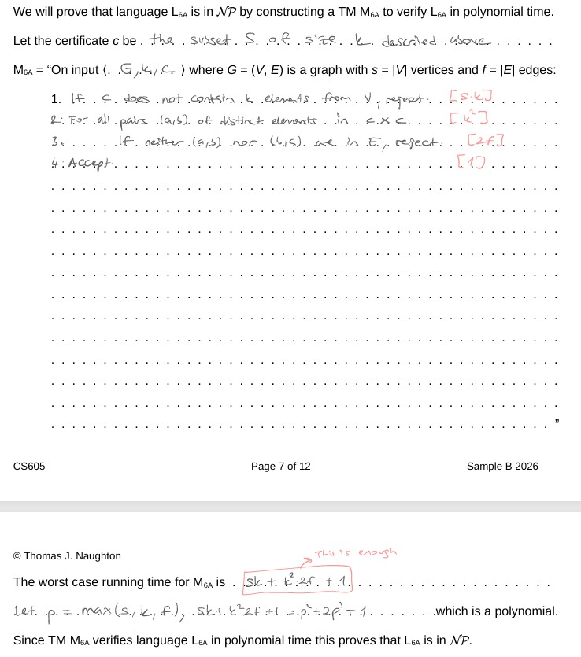
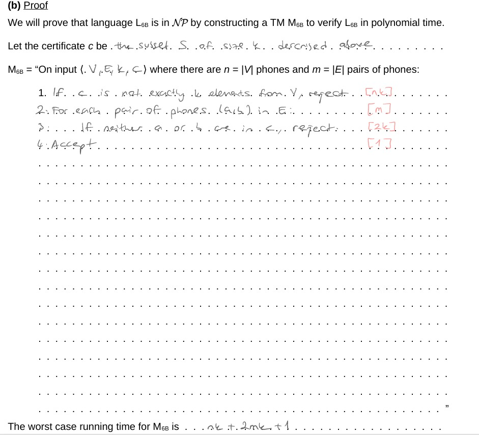
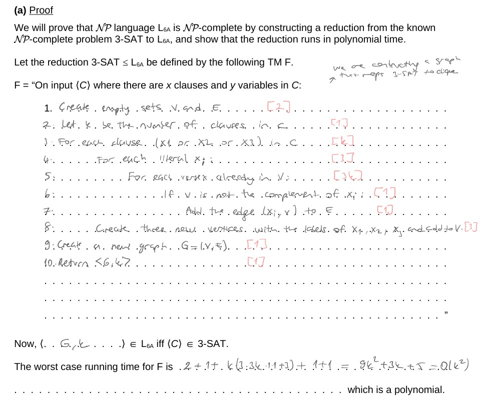
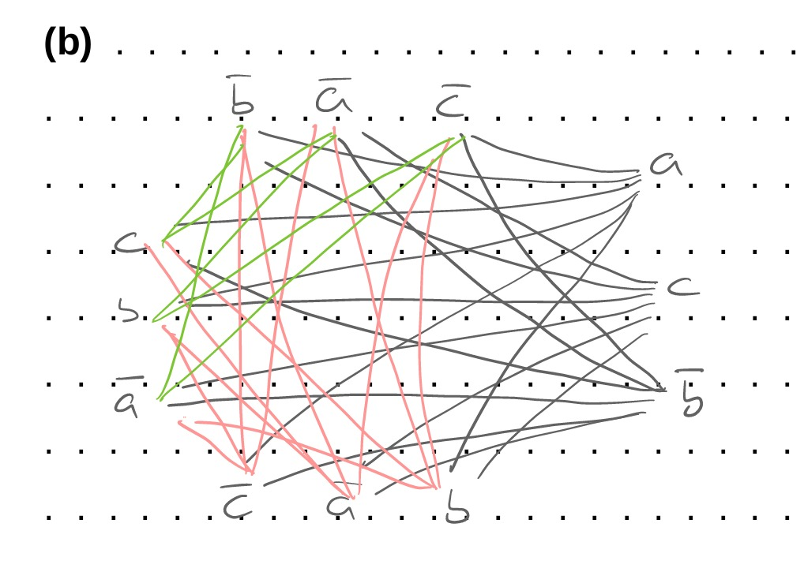

先读这一屏
这张模拟考页的用法：从 Q1 到 Q7 顺着背。每题只记三件事：题面对象是什么、证据/构造是什么、最后一句结论怎么落地。CS605 的 Sample A/B 都是同一套骨架换皮：Q1 泵引理，Q2 可判定/可识别，Q3/Q5 HALT 归约，Q4 用 recognisable 与 complement 定理，Q6 验证 certificate，Q7 做 polynomial reduction。
临场优先级：先写模板骨架，再填题面细节。不要写空话，例如“pump 后坏了”“simulate then trigger”。卷面必须具体到：哪个 block 变长、哪个变量触发、哪个 edge 或 subset 被检查。
| 题号 | Sample A | Sample B | 共同套路 |
|---|---|---|---|
| Q1 | Not regular: equal halves same first symbol；Not CFL: u#v exactly one difference | Not regular: unary blocks；Not CFL: repeated words / reverse words | 三段/五段 pumping lemma |
| Q2 | FA accepts length > 5；Java a+b=c eventually | FA nonempty；Java file event eventually | FA 有限所以 decidable；Java eventually event 可识别 |
| Q3-Q5 | Exception21；TR 分析；line never executed | TM language nonempty；TR 分析；b < mean(c) throughout | HALT 塞进构造，停机后触发或破坏性质 |
| Q6-Q7 | Overlapping subsets / multi-FA word；Hitting Set NP-complete | CARA clique / phone vertex cover；3-SAT to clique | Certificate + verifier；3-SAT reduction |
Q1：Pumping Lemma
Sample A Q1(a)：证明 L = {uv : |u|=|v|, u 和 v 开头相同} 不是 regular
完整中文答案：假设 L 是 regular。由 regular pumping lemma，存在泵长 p。取字符串 s = 0^p 1^p 0^p 1^p。令左半 u = 0^p1^p，右半 v = 0^p1^p，两半长度相同并且都以 0 开头，所以 s ∈ L，且 |s| ≥ p。
根据泵引理，s 可以写成 xyz，满足 |xy| ≤ p、|y| > 0，并且对所有 i ≥ 0 都有 xy^i z ∈ L。因为 s 的前 p 个字符全是 0，且 |xy| ≤ p，所以 y 只能由 0 组成。设 |y| = r，其中 r > 0。
取 i = 2，得到 s' = xy^2z = 0^(p+r)1^p0^p1^p。如果 r 是奇数，则 s' 总长度为奇数，不能分成两个等长部分，因此不在 L。如果 r 是偶数，则 s' 的中点落在第一段 1 的内部，所以右半的第一个字符是 1，而左半的第一个字符是 0，两半开头不同，也不在 L。无论 r 奇偶，泵后的字符串都不在 L，矛盾。因此 L 不是 regular。
概念解释：这题的死穴是“正中点”。DFA 没有无限计数能力，不能知道字符串的后一半从哪里开始。选 0^p1^p0^p1^p 的目的，是用 |xy|≤p 把 y 锁在最左边的 0 区域。泵 y 后，整个中点移动到第一段 1 里，右半开头变成 1。卷面上最容易漏的是 r 奇偶分类；不分类就不能严谨解释泵后为什么一定不在语言里。
Sample B Q1(a)：证明 unary block 语言不是 regular
完整中文答案：令 L = {w1#w2#...#w2n : 每个 wi ∈ {a}*, n > 0，并且存在某个奇数 i 使 wi = w(i+1)}。假设 L regular，令 p 为泵长。取 s = a^p#a^p。这是两个 unary blocks，n = 1，奇数 i = 1，且 w1 = w2，所以 s ∈ L。
由 pumping lemma，s = xyz，满足 |xy| ≤ p 且 |y| > 0。因为前 p 个字符都是第一个 block 里的 a，所以 y = a^r，其中 r > 0。取 i = 2，得到 xy^2z = a^(p+r)#a^p。此时只有两个 blocks，唯一可检查的奇数相邻对是 w1 与 w2，但二者长度不同，所以不存在奇数 i 使 wi = w(i+1)。泵后字符串不在 L，与引理矛盾。因此 L 不是 regular。
概念解释：这里 witness 必须只保留一个相等的 odd pair。不要选 a^p#a^p#a^p#a^p，因为泵坏第一对后第三、第四块仍然相等，字符串可能还在 L。选 a^p#a^p 是最干净的：泵坏唯一 pair，语言条件直接消失。
Sample A Q1(b)：证明 L = {u#v : |u|=|v| 且 u/v 恰好一个位置不同} 不是 CFL
完整中文答案：假设 L 是 context-free，令 p 为 CFL pumping length。取字符串 s = 0^p1^p#0^p1^(p-1)0。左边 A = 0^p1^p，右边 B = 0^p1^(p-1)0，二者长度都是 2p，且只有最后一个字符不同，所以 s ∈ L。
由 CFL pumping lemma，s 可以写成 uvxyz，满足 |vxy| ≤ p、|vy| > 0，并且所有 i ≥ 0 都有 uv^i x y^i z ∈ L。考虑 vxy 的位置。
第一，如果 vxy 完全在 # 左侧，取 i = 2 会只改变左半长度，右半不变，因此 |u| ≠ |v|，不在 L。第二，如果 vxy 完全在 # 右侧，同理只改变右半长度，也不在 L。
第三，如果 vxy 跨过 #。若 v 或 y 含有 #，取 i = 2 会产生多个 #，格式错误，不在 L。若只有 x 含有 #，则 v 在 # 左边的一段 1 中，y 在 # 右边的一段 0 中。取 i = 0 删除 v 和 y。如果删除数量不同，两边长度不同；如果删除数量相同且大于 0，左边会少一些 1，右边会少一些 0，对齐后至少多出一个新的不同位置，而原来的最后一位不同仍然存在，因此不再是“恰好一个位置不同”。所以也不在 L。
所有可能的切分都能找到泵法使字符串离开 L，矛盾。因此 L 不是 context-free。
概念解释：CFL 泵引理是五段式，泵的是 v 和 y，不泵 x。|vxy|≤p 是一把可以漂在中间的短尺，不像 regular 的 |xy|≤p 一定钉在开头。证明 not CFL 必须排除所有可能的 vxy 位置：左边、右边、跨 #。跨 # 时还要分清 # 在 v/y 里还是只在 x 里。
Sample B Q1(b)：选择 L1Ba，证明 repeated word 语言不是 CFL
完整中文答案：选择 L1Ba = {w1#w2#...#wn : wi ∈ {a,b}* 且存在 j>i 使 wi=wj}。假设它是 CFL，令 p 为泵长。取 s = a^p b^p # a^p b^p。这里 w1 = w2 = a^p b^p，所以 s ∈ L1Ba。
由 CFL pumping lemma，s = uvxyz，且 |vxy|≤p、|vy|>0。若 vxy 完全在 # 左边，泵 i=0 或 i=2 只改变 w1，w2 不变，所以二者不再相等。若 vxy 完全在 # 右边，同理只改变 w2，也不再相等。若 vxy 跨 #，如果 v 或 y 包含 #，泵会删除或复制 #，导致格式错误；如果只有 x 包含 #，则 v 位于左边末尾的 b 中，y 位于右边开头的 a 中，泵 i=0 会从左词删除一些 b、从右词删除一些 a，左右词不可能继续相等。矛盾。因此 L1Ba 不是 context-free。
概念解释：这是“正向复制”题。PDA 的栈能天然处理反向匹配，但对 w#w 这种原样复制很吃力。选 a^p b^p#a^p b^p 是为了让短尺 vxy 无法同时修改左右两边的对应区域；它只能局部动一小块，一动就破坏两边完全相等。
Q2：Decidable 与 Turing-recognisable
Sample A Q2(a)：FA 是否接受某个长度大于 5 的 word，是 decidable
完整中文答案：构造 decider D。输入 <M>，先检查 M 是否是 finite automaton 的合法编码，不合法则 reject。构造一个 DFA B，它接受所有长度大于 5 的字符串。再构造乘积自动机 C，使 L(C)=L(M)∩L(B)。也就是说，C 只接受那些既被 M 接受、又长度大于 5 的 word。最后运行 FA emptiness decider E_DFA 检查 L(C) 是否为空。如果 L(C) 非空，则 accept；如果为空，则 reject。
因为构造 B、构造交集自动机 C、运行 E_DFA 都会在有限步骤内停机，所以 D 对所有输入都停机并正确判断。因此 L2A 是 decidable。
概念解释：FA 题证明 decidable 的核心是“外包拼图”：把题面条件做成一个新 FA，然后把它丢给已知可判定工具，例如 emptiness。这里“长度大于 5”本身是 regular；和 M 求交集后，问是否存在这样的 word，就变成检查交集语言是否为空。
Sample B Q2(a)：FA language nonempty 是 decidable
完整中文答案：构造 decider D。输入 <M>，检查 M 是否是 alphabet {a,b} 上的 finite automaton。若不是，reject。若是，把 M 看成一张有向图，从 start state 出发做 BFS/DFS，检查是否能到达某个 accepting state。如果能到达，说明存在一个 word 被 M 接受，accept；如果所有可达状态都搜完仍然没有 accepting state，reject。状态数有限，图搜索必然停机，所以 L2A decidable。
概念解释：FA 的非空性不是靠“试所有字符串”，而是靠状态图可达性。一个 accepting state 可达，就必然有路径标签对应某个 word；不可达，就没有任何 word 能让机器接受。这是有限对象，所以能判定。
Sample A/B Q2(b)：Java eventually event 是 Turing-recognisable
完整中文答案：构造 recogniser T。输入相应的 Java 程序与变量/参数，先检查编码是否合法；不合法可直接 reject。然后逐步模拟 J 的执行。
Sample A 的 a+b=c 版本：每执行一步后读取变量 a,b,c 的当前值；如果某一时刻满足 a+b=c，立刻 accept。若程序终止且从未满足条件，则 reject。若程序永远运行且从不满足条件，则 T 也永远运行。
Sample B 的 files 版本可以选 L2Ba：模拟 J，记录已经打开了多少个文件以及当前打开文件数。当第 n 个文件已经被打开以后，如果某一时刻当前打开文件数不等于 n，则 accept。若事件永不出现，模拟可能永远继续。因此该语言 Turing-recognisable。
概念解释：recognisable 的关键词是“抓现行”。只要题面说的是 eventually / at least once / after some event later happens，yes instance 会在有限时间暴露证据。模拟器看见证据就 accept；看不见时可以一直等。这和 decidable 的区别是：decider 必须对 no instance 也停机。
Q3：Undecidable Mapping Reduction
Sample A Q3：Java 不抛 Exception21 是 undecidable
完整中文答案：令 L3 = {<J> : J 是无输入 Java 程序，运行时不抛 Exception21}。它的补集是：Complement L3 = {<J> : J 运行时会抛 Exception21}。在证明中取 L = Complement L3。
从 HALT 做归约。假设 L decidable。构造映射 f：给定 HALT 输入 <M,w>，构造无输入程序 N：
public static void main(void) {
simulate M on input w;
throw new Exception21();
}若 M 在 w 上停机，则 N 的模拟结束并抛出 Exception21，所以 <N> ∈ L。若 M 在 w 上不停机，则 N 永远卡在模拟中，不会抛出 Exception21，所以 <N> ∉ L。于是 <N> ∈ L iff <M,w> ∈ HALT。
如果 L 有 decider，就能先构造 <N>，再运行这个 decider 来判定 HALT，矛盾。因此 Complement L3 undecidable；而不可判定语言的补集也不可判定，所以 L3 undecidable。
Sample B Q3：TM language nonempty 是 undecidable
完整中文答案：令 L3 = {<M> : M 是 alphabet {a,b} 上的 TM 且 L(M) 非空}。从 HALT 归约。假设 L3 decidable。给定 <M,w>，构造 TM N：N 在任意输入 x 上，忽略 x，模拟 M(w)；如果 M(w) 停机，则 accept x；如果 M(w) 不停机，则 N 也不停机。
若 M(w) 停机，则 N 至少接受一个字符串，事实上接受所有输入，因此 <N> ∈ L3。若 M(w) 不停机，则 N 不接受任何字符串，L(N)=∅，所以 <N> ∉ L3。于是 <N> ∈ L3 iff <M,w> ∈ HALT。若 L3 decidable，则 HALT decidable，矛盾。因此 L3 undecidable。
概念解释：mapping reduction 的思路不是“解决目标题”，而是把 HALT 偷塞进目标题。如果假设目标题有黑盒 decider，那么通过构造 f 和这个黑盒就能解决 HALT。这个结论不可能成立，所以目标题不可能 decidable。
Q4：Turing-recognisable / Not Turing-recognisable
Sample A：Exception21 版本
完整中文答案：Q3 中的 L3 是“不抛 Exception21”。先证明 Complement L3 Turing-recognisable。构造 TM R：输入 <J>，模拟 J 的运行；若某一步 J 抛出 Exception21，则 accept；若 J 永远不抛，R 就一直模拟。这样 R 识别 Complement L3。
因为 Q3 已证明 L3 与其补集都 undecidable。如果 L3 也 Turing-recognisable，那么 L3 和 Complement L3 都 T-r，由定理可得 L3 decidable，矛盾。因此 L3 不是 Turing-recognisable。结论：Complement L3 是 T-r；L3 是 co-T-r，但不是 T-r。
Sample B：TM nonempty 版本
完整中文答案：这里 L3 是“TM 接受至少一个 word”。构造 recogniser R：输入 <M>，枚举 {a,b}* 中所有字符串，并采用 dovetailing 方式并行模拟 M 在这些字符串上的运行；只要发现某个字符串被 M accept，就 accept <M>。若 L(M) 非空，迟早能发现一个 accepted word；若 L(M) 为空，R 可能永远运行。因此 L3 是 Turing-recognisable。
又因为 Q3 已证 L3 undecidable。如果 Complement L3 也 Turing-recognisable，那么 L3 和 Complement L3 都 T-r，会推出 L3 decidable，矛盾。因此 Complement L3 不是 Turing-recognisable。
概念解释：Q4 不要背“L3 是 TR 还是补集是 TR”。先看 yes condition 是否 eventually observable。会抛异常、会接受某个 word、会出现坏状态，这些都能被模拟抓到，所以是 T-r。永远不发生某事、语言为空、性质 throughout 一直成立，通常不是直接 T-r，要用 “both T-r implies decidable” 反推。
Q5：第二个 Undecidable Reduction
Sample A：line number n is never executed
完整中文答案：令 L5 = {<J,n> : J 无输入，运行时 line n never executed}。取 L = Complement L5，即 line n 会被执行。假设 L decidable。从 HALT 构造归约：给定 <M,w>，构造无输入程序 N：
public static void main(void) {
simulate M on input w; // line 1
int trap = 1; // line 2, target line n
}令输出为 <N,2>。如果 M(w) 停机，N 会执行到 line 2，所以 <N,2> ∈ Complement L5。如果 M(w) 不停机，N 永远卡在模拟中，line 2 never executed，所以 <N,2> ∉ Complement L5。于是 <N,2> ∈ Complement L5 iff <M,w> ∈ HALT。若 Complement L5 decidable，则 HALT decidable，矛盾。因此 Complement L5 undecidable，也推出 L5 undecidable。
Sample B：throughout execution b < mean(c)
完整中文答案：令 L5 = {<J,b,c> : J 运行全程中 b < mean(c)}。取 L = Complement L5，即运行中某一刻出现 b ≥ mean(c)。从 HALT 归约。给定 <M,w>，构造 Java 程序 N：
public static void main(void) {
float b = 0.0;
int[] c = {1}; // mean(c) = 1, so b < mean(c)
simulate M on input w;
b = 2.0; // now b >= mean(c), property broken
}如果 M(w) 停机，N 执行到 b=2.0，违反 b < mean(c)，所以 <N,b,c> ∈ Complement L5。如果 M(w) 不停机，N 永远停留在模拟中，b=0、mean(c)=1，性质始终成立，所以 <N,b,c> ∉ Complement L5。于是 <N,b,c> ∈ Complement L5 iff <M,w> ∈ HALT。若 Complement L5 decidable，则 HALT decidable，矛盾。因此 L5 undecidable。
概念解释：Q5 常考“后置触发”。先让程序在模拟 M(w) 前后保持目标性质，等 M 真停机后才触发陷阱。若 M 不停机，陷阱永远不到；若 M 停机，陷阱必定发生。line never executed 和 throughout property 都是这套结构。
Q6：Prove in NP
Sample A Q6(a)：两个 possibly overlapping proper subsets
完整中文答案：证明 L6A ∈ NP。证书 c 是两个集合 Y 和 Z。Verifier M6A 在输入 <A,c> 上执行：检查 c 是否确实编码两个集合 Y,Z；检查 Y 和 Z 都是 A 的 proper subsets；检查 A 的每个元素至少出现在 Y 或 Z 中，即 Y∪Z=A；分别计算 sum(Y) 和 sum(Z)；若两者相等且前面检查都通过，则 accept，否则 reject。
若 A 有 m 个元素，检查子集关系、覆盖关系和求和都可以通过有限扫描完成，例如保守写成 O(m²)，这是多项式。因此该 TM 在多项式时间内验证 L6A，所以 L6A ∈ NP。
概念解释：这题不是让你找 Y/Z。NP 证明只问：如果别人把 Y/Z 给你，你能不能快速验收。注意 Y 和 Z 可以重叠，例子里 1 同时在 Y 和 Z。真正要检查的是 proper subset、union 覆盖 A、sum 相等。
Sample A Q6(b)：一组 FA 是否共同接受某个 word
完整中文答案：证明 L6B ∈ NP。证书 c 是某个具体 word w。Verifier M6B 输入 <A,n,W,c>，其中 A 是 p 个 finite automata 的集合。检查 c 是否属于 W；检查 |c| 是否等于 n；然后对 A 中每台 FA Mi，模拟 Mi 在 c 上运行。如果任何 Mi reject，则 reject；若所有 Mi 都 accept，则 accept。
每台 FA 在长度 n 的 word 上模拟 O(n) 步，p 台机器总时间 O(pn)，再加上检查 c∈W 和长度，仍是多项式。因此 L6B ∈ NP。
Sample B Q6(a)：CARA clique ∈ NP
完整中文答案：证书 c 是 k 个学生组成的集合 S。Verifier 输入 <G,k> 和 S，先检查 S 是否有 k 个元素且每个元素都在 V 中；然后对 S 中每一对不同学生 u,v，检查 (u,v) 或 (v,u) 是否在 E 中。如果发现某一对没有 friend edge，则 reject；全部检查通过则 accept。
按参考答案的保守时间写法：设 s=|V|、f=|E|。检查 k 个证书元素是否在 V 中可写 O(sk)。S 内最多 k² 对；每对检查两种方向并扫描边表，最多 2f，所以总时间可写 sk + k²·2f + 1，这是多项式。因此 CARA clique ∈ NP。
Sample B Q6(b)：phone vertex cover ∈ NP
完整中文答案：证书 c 是 k 部 phones 的集合 S。Verifier 输入 <V,E,k> 和 S，检查 S 是否包含 k 个来自 V 的 phones；然后遍历每条 communication pair (u,v) ∈ E，检查 u∈S 或 v∈S。如果某条边两端都不在 S 中，reject；全部边都被覆盖则 accept。
按参考答案的保守时间写法：设 n=|V|、m=|E|。检查证书元素是否合法可写 O(nk)。对每条边检查两个端点是否在 S 中，扫描 S 最多 2k，所以总时间 nk + 2mk + 1，多项式。因此 phone vertex cover ∈ NP。
| 参考图 | 卷面要学什么 |
|---|---|
 | Clique verifier 查的是 S 内部所有 pair 是否都有 edge。不要写成检查所有图中边。 |
 | Vertex cover verifier 查的是图中每条 edge 是否至少一端在 S。不要写成检查 S 内部两两相连。 |
Q7：NP-complete
Sample A Q7：coach players / hitting set 是 NP-complete
完整中文答案：先证明 L7 ∈ NP：证书是 k 个 players 的集合 H。Verifier 检查 |H|=k，并且对每个 match list Mi，检查 H∩Mi 是否非空。所有 match 都被 hit 则 accept。检查每个集合交集可以在多项式时间内完成，所以 L7 ∈ NP。
再从 3-SAT 做 polynomial reduction。给定 3-CNF 公式 C，有 y 个变量和 x 个 clauses。构造 players 集合 P：对每个变量 vi，创建两个 players：vi 和 ¬vi。对每个变量 vi，创建一个 variable match Mi={vi,¬vi}。对每个 clause Cj=(l1∨l2∨l3)，创建 clause match M(y+j)={l1,l2,l3}。设目标 k=y，输出 <(M1,...,M(y+x)),k>。
正确性：若 C satisfiable，按 satisfying assignment 选择每个变量为 true 的 literal player，得到 y 个 players。它们 hit 每个 variable match，也因为每个 clause 至少有一个 true literal，所以 hit 每个 clause match。反过来，若存在 size y 的 players 集合 H hit 所有 matches，因为有 y 个 variable matches 且每个都必须被 hit，H 必须从每对 {vi,¬vi} 中恰好选一个。这定义了一个一致 truth assignment。又因为 H hit 每个 clause match，每个 clause 至少有一个被选中的 true literal，所以 C satisfiable。
构造只为每个变量和 clause 建常数个对象，时间 O(x+y)，是多项式。3-SAT ≤p L7，所以 L7 NP-hard。结合 L7 ∈ NP，L7 NP-complete。
概念解释：这题本质是 Hitting Set。k=y 是核心：它把“每个变量至少选一个”压成“每个变量恰好选一个”，从而强制形成 truth assignment。Variable match 负责一致性，clause match 负责满足性。
Sample B Q7(a)：3-SAT 到 CARA clique
完整中文答案：从 Q6(a) 已知 L6A ∈ NP。下面从已知 NP-complete 的 3-SAT 归约到 L6A。给定 3-CNF formula φ，有 m 个 clauses。为每个 clause 中的每个 literal occurrence 建一个 vertex，所以每个 clause 产生 3 个 vertices。设目标 k=m。
加边规则：对任意两个来自不同 clauses 的 literal vertices，如果它们不是同一变量的互补形式，例如不是 x 与 ¬x，就加 edge。同一个 clause 内不加 edge。最后输出图 G 与 k。
正确性：若 φ satisfiable，则每个 clause 至少有一个 true literal。每个 clause 选一个 true literal 对应的 vertex。它们来自不同 clauses，并且两个 true literals 不可能互为 complement，所以根据边规则两两有边，形成 size m 的 clique。反过来，若 G 有 size m clique，因为同 clause 内没有边，clique 最多从每个 clause 取一个 vertex；size=m 又等于 clauses 数，所以它恰好每个 clause 取一个。clique 中任意两点有边，因此没有互补 literals。把选中的 literals 设为 true，就得到一致 assignment，并且每个 clause 至少一个 literal true，所以 φ satisfiable。
构造有 3m 个 vertices，edges 至多 O(m²)，多项式。因此 3-SAT ≤p L6A，L6A NP-hard。结合 L6A ∈ NP，L6A NP-complete。
Q7B 最新校正：完整边规则是：each literal should be connected to every other literal in a different clause from itself other than its own complement。也就是说，每个 literal 要连到所有其他 clause 的 literal，唯一不连的是自己的 complement；同 clause 内也不连。不要只画被选中的边、不要只连相邻 clause，也不要画成 Vertex Cover 的变量 gadget。
Sample B Q7(b)：给具体 3-SAT 公式时怎么输出图
完整中文答案：如果题面给 C=(l11∨l12∨l13)∧...∧(lm1∨lm2∨lm3)，输出图应这样写：vertices 是所有 literal occurrences，记作 v(i,lij)。即使两个 clauses 中都出现 a，也要当成两个不同 vertices，因为它们属于不同 clause occurrence。
Edges 列法：对每一对 v(i,l) 与 v(j,r)，只要 i≠j 且 l 不是 r 的 complement，就加入 edge。若 i=j，不连；若 l=x 且 r=¬x，不连。目标 k = clause 数 m。画图时把每个 clause 画成一列三个点，跨列尽量全连，只漏掉互补冲突线。
| 参考图 | 卷面要学什么 |
|---|---|
 | Q7(a) 必须写 reduction construction、polynomial size、iff 两个方向。只说“3-SAT 到 clique”不够。 |
 | Q7(b) 画图的关键是完整 cross-clause non-complement edges。missing edge 必须有理由：same clause 或 complement conflict。 |
最后 15 分钟只背这个
Q1：not regular 用 xyz 和 |xy|≤p；not CFL 用 uvxyz 和 |vxy|≤p。每个 case 都要说泵后违反哪一条。
Q2：FA 是有限图，decidable；Java/TM 的 eventually event 用模拟抓现行，Turing-recognisable。
Q3/Q5：从 HALT 构造 N。停机后触发异常、执行目标行、破坏 b<mean(c)；不停机就永远不触发。注意常常归约到 complement。
Q4：先找 eventually observable 的一侧证明 T-r，再用 “both L and complement T-r implies decidable” 推另一侧 not T-r。
Q6：不要解题，只验收 certificate。写 certificate、verifier steps、polynomial time。
Q7：先 in NP，再 reduction。3-SAT 到 hitting set：变量对 + clause sets + k=变量数。3-SAT 到 clique：literal vertices + 不同 clause 非互补全连 + k=clause 数。